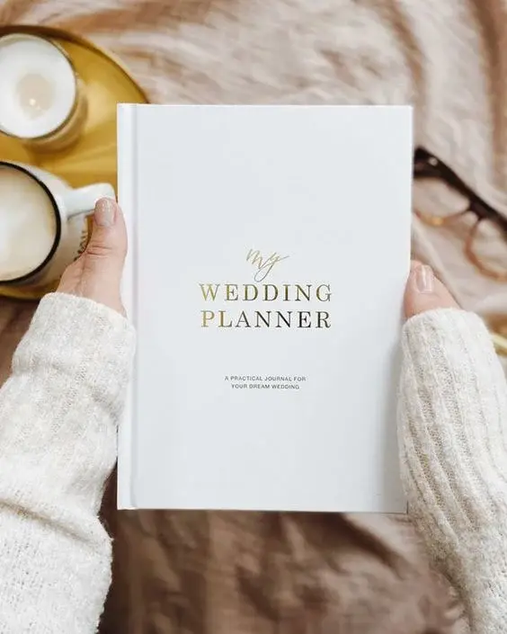
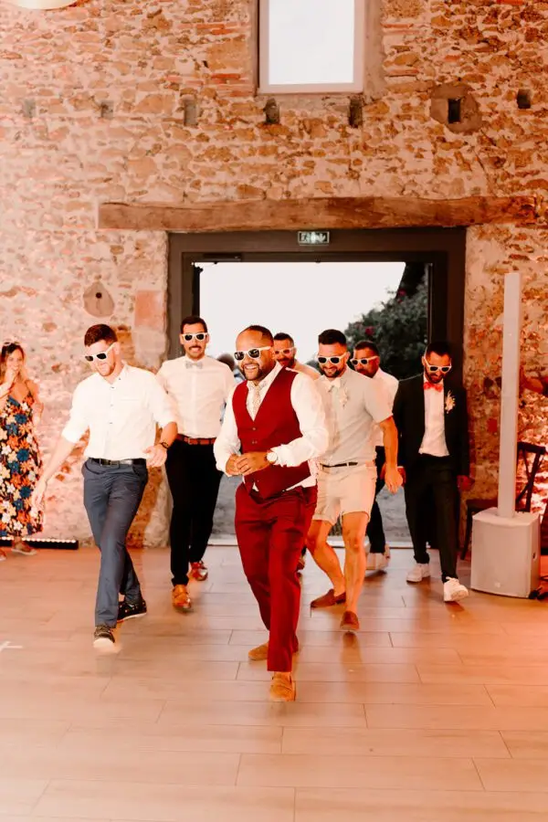
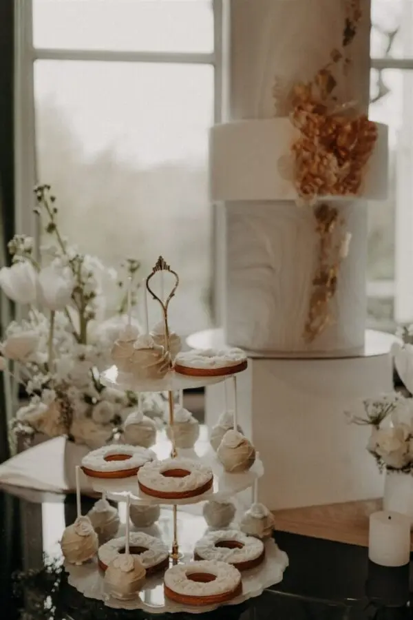
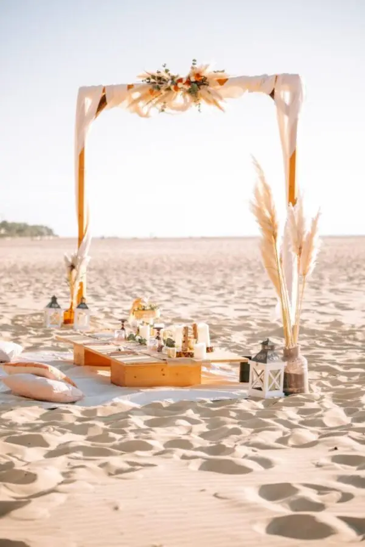
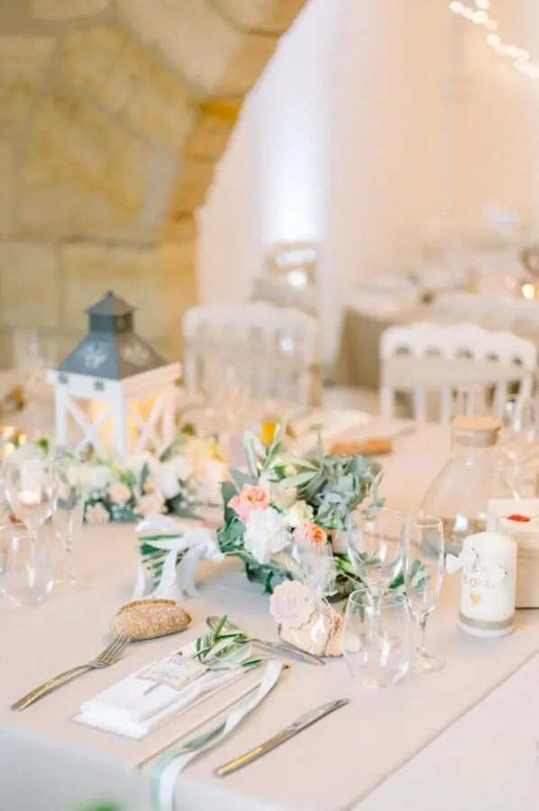
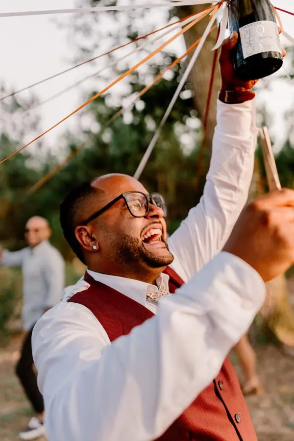
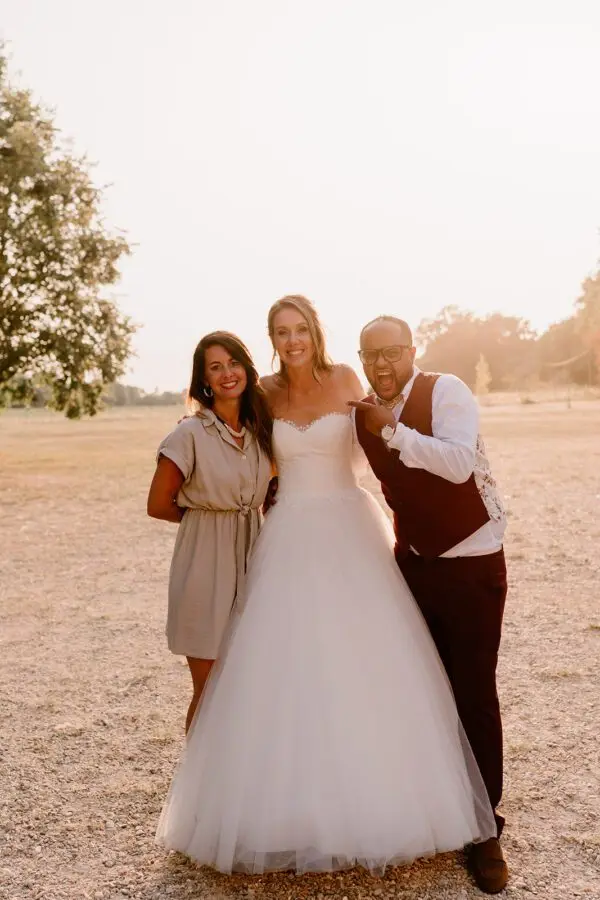

The foundations of the profession
Understanding the wedding planner's role
Balancing professional skills, emotional intelligence and responsibility, the wedding planner's job is much more than organising an event. Being a wedding planner means knowing how to coordinate every supplier, respond to clients' requests and be a shoulder to lean on throughout the preparations, thinking of the smallest details from planning to execution. One of the greatest satisfactions of the job is undoubtedly the ability to turn clients' dreams into reality. Every wedding is a blank canvas on which the wedding planner can give free rein to their creativity while respecting the couple's budget and decisions. Whether transforming a classic room into a fairytale setting or weaving unique cultural elements into the ceremony, the possibilities for creating memorable events are endless. Innovation also plays a crucial role. Wedding planners must keep up with the latest wedding trends, from eco-friendly concepts to themed weddings and new experiences. By pushing the boundaries of tradition, wedding planners can offer their clients unique, personalised weddings that will stay with them for years to come.
Training and building skills
The key skills
Driven by a passion for weddings, this job calls for certain soft skills such as great creativity, perfectionism and strong communication to guarantee the event's success and the clients' satisfaction. Managing stress and being able to solve problems quickly are also essential to make sure weddings run smoothly.
Following specialised training
Taking a specialised wedding planning course is an excellent way to acquire the knowledge and skills needed to succeed in this field. These courses cover essential subjects such as project management, event planning, marketing and client relations. They also offer opportunities for internships and networking, providing hands-on experience and a feel for the realities of the job.
Developing practical skills
Alongside specialised training, it is essential to develop hard skills. This might include internships with established professionals, volunteering at events or even organising small events to gain experience. By actively practising project management, team coordination and real-world problem solving, future wedding planners can strengthen their skills and their confidence in succeeding in this demanding field.












The wedding planner's tasks
Initial consultation with clients
Meeting the couple to discuss their needs, expectations and vision for their wedding.
Managing the budget
Helping clients set a realistic budget and stick to it throughout the planning process.
Finding and booking reception venues
Identifying and visiting potential venues, negotiating contracts and coordinating bookings.
Selecting and coordinating suppliers
Recommending and hiring suppliers such as caterers, photographers, DJs, florists and musicians, and coordinating their services.
Designing and managing the planning timeline
Drawing up a detailed timeline of tasks and deadlines, together with the clients.
Helping design the wedding's theme and style
Helping clients define a theme or style for their wedding and choose decorative elements to match.
Managing invitations and the guest list
Helping design, send and track responses to invitations, and managing the guest list.
Coordinating rehearsals and ceremonies
Organising and overseeing ceremony rehearsals and coordinating the running of the ceremony itself.
Handling logistical details
Arranging transport, accommodation and other logistics for the couple and guests where needed.
Handling the unexpected
Being ready to quickly solve any problems or surprises that may arise before or during the wedding.
Coordinating the wedding day
Overseeing every activity on the wedding day, from start to finish, to ensure the event runs smoothly.
Post-wedding follow-up
Making sure all contracts are honoured, helping coordinate the dismantling and cleaning of the venue, and gathering clients' feedback to improve future services.
Launching and growing your business
Creating and promoting your brand
How do you build a professional network?
A professional network can open doors and connect you with other industry professionals, such as the many suppliers involved. Contacts can not only provide recommendations and opportunities to collaborate, but also give you access to valuable resources and insight into market trends. There are a few tips for making contacts, such as attending industry events or using social media.
The steps to setting up a business
Setting up a wedding planning business involves several essential steps: · Define your concept: identify your niche and your market positioning. What kinds of weddings will you plan? What will your unique value proposition be? Set out your vision and goals for your business. · Write a business plan: draw up a detailed business plan including market analysis, a competitor study, a marketing strategy, a financial plan and revenue projections. A solid business plan will serve as a roadmap for launching and growing your business. · Choose a legal structure: select the most appropriate legal structure for your business. · Register your business: complete the administrative steps needed to register your business with the relevant authorities. · Develop your brand: an effective marketing strategy is crucial. This includes creating a strong brand identity, with a business name, a logo and distinctive colours. It can also include a professional website and regular social media posts to share your work. A well-designed marketing strategy can help you attract clients and grow your business successfully. · Get the tools and resources you need: invest in the tools and resources needed to run your business efficiently, such as project management software, online marketing tools and customer relationship management (CRM) systems. · Launch your services: once every aspect of your business is in place, officially launch your wedding planning services.
How the Lovely Day Event agency came to be
After several months of distance learning, I acquired the tools I needed to start my business and deepened the skills required to create my company. I launched Lovely Day Event as a sole trader in 2014. After taking part in several wedding fairs and inspiration shoots and building my network, I have had the chance to accompany dozens of couples. Full of ideas and deeply committed to my couples, I deliver weddings of the highest quality.



In short…
Becoming a wedding planner is much more than a profession; it is a vocation that calls for a unique blend of skills, dedication and creativity. The job requires an ability to understand clients, to turn their dreams into reality and to manage every aspect of planning a wedding. Creativity plays a crucial role, allowing the wedding planner to design unique, memorable events that reflect each couple's personality and style. To succeed as a wedding planner, it is essential to take specialised training and gain practical skills in project management, communication and problem solving. Building a solid professional network is also indispensable for accessing the resources and opportunities the wedding industry offers. By providing exceptional service, exceeding clients' expectations and staying ahead of industry trends, a wedding planner can not only make couples' dreams come true but also build a strong, lasting reputation in the sector. In the end, witnessing the couple's joy and happiness on their special day is the ultimate reward for those who choose this exciting and fulfilling profession.